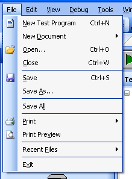
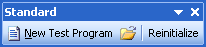
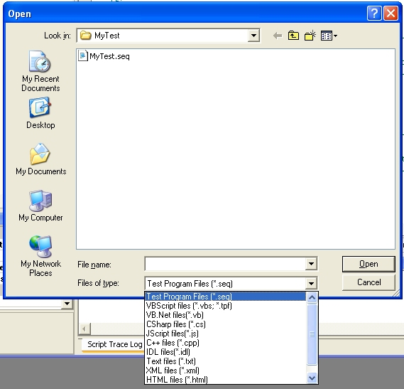

The File menu and the Standard toolbar (shown below) share much of their functionality and are therefore both discussed here. The items on the menu will vary depending on if a document is open and if so, whether that document is a test program or a file. Therefore, your menu may not always appear as it does in the images shown here.
|  |  |
| Close | Exit | New Document | New Test Program |
| Open | Print Preview | Recent Files | |
| Save | Save All | Save As |
Close (File Menu)
Closes the currently selected document (either a single file or a test program). If the document contains any unsaved changes, the user is prompted to save them before closing. Shortcut key is Ctrl+W.
Exit (File Menu)
Exits the entire application. If there are any documents opened with unsaved changes, the user is prompted to save them before the application closes.
New Document (File Menu)
Creates a new file. Select the type of file to create from the submenu that displays as shown below. The type of file will determine the keywords to color-code in the editor and the default file extension to use when the file is saved.
NOTE: The available file types do NOT imply that a test program can be written and executed in any language other than VBScript. The test sequencer can ONLY execute test programs written in VBScript. These additional editors are only included as a convenience to the user.
| New Test Program (File Menu and Standard Toolbar) |
Creates a new test program. For more information, see Creating a new test program.
| Open (File Menu and Standard Toolbar) |
Opens an existing test program or file. A file browser dialog box appears. By default, only test program files (those with the ".seq" extension) are visible. To change this filter, select the file type from the drop-down box at the bottom of the dialog window.

| Print (File Menu and Edit Toolbar) |
Prints the selected document. If a test program window has the focus when this button is clicked, select the test program's item to print from the submenu as shown below. If a single document has the focus when the print button is clicked, the submenu does not appear and the document itself is printed.
 |
Script View: Prints the main test script. Test Results: Prints the test results from the last test program run. If the program has not yet been run, nothing is sent to the printer. Sequence View: Prints the nodes in the Test Sequence View. |
| Print Preview (File Menu and Edit Toolbar) |
Opens a new window with a preview of the file to be printed. If a test program window currently has the focus, the print preview shows a preview of the test script.
Recent Files (File Menu)
Shows a list of the most recently opened files. Click on a file from the list to quickly open that file.

| Save (File Menu and Edit Toolbar) |
Saves the currently selected document. If the document is newly created and has not been named, you will be prompted for a file path and file name. If the document is a test program, all test program files (the main script file, the sequence file, and the globals file if one exists) are saved.
Save All (File Menu)
Saves all files in the test program (the sequence file, test script, and globals file).
Save As (File Menu)
Saves a copy of the current document under a new name. If the current document is a test program, the sequence file, test script and globals file will all be copied and saved.
Astronics Test Systems
Last updated on 11/17/14 by M. Buccat